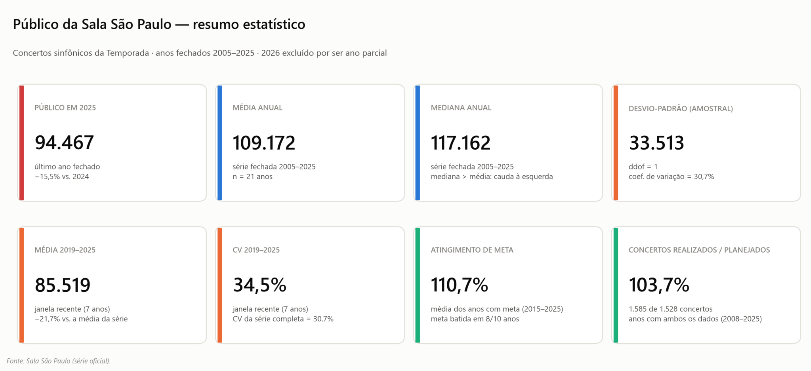
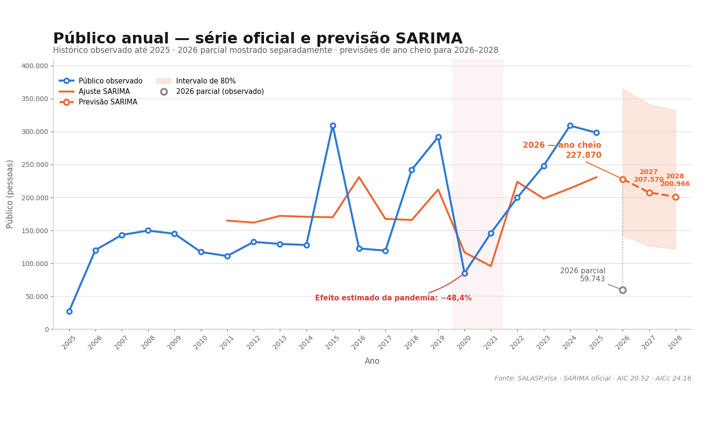
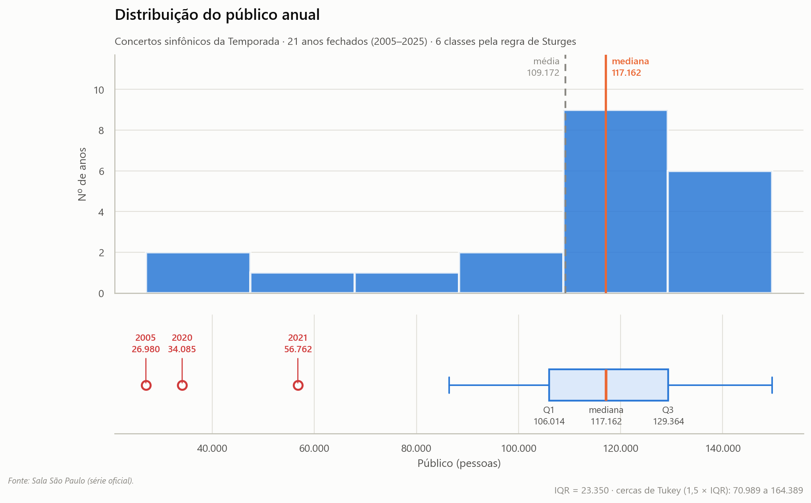
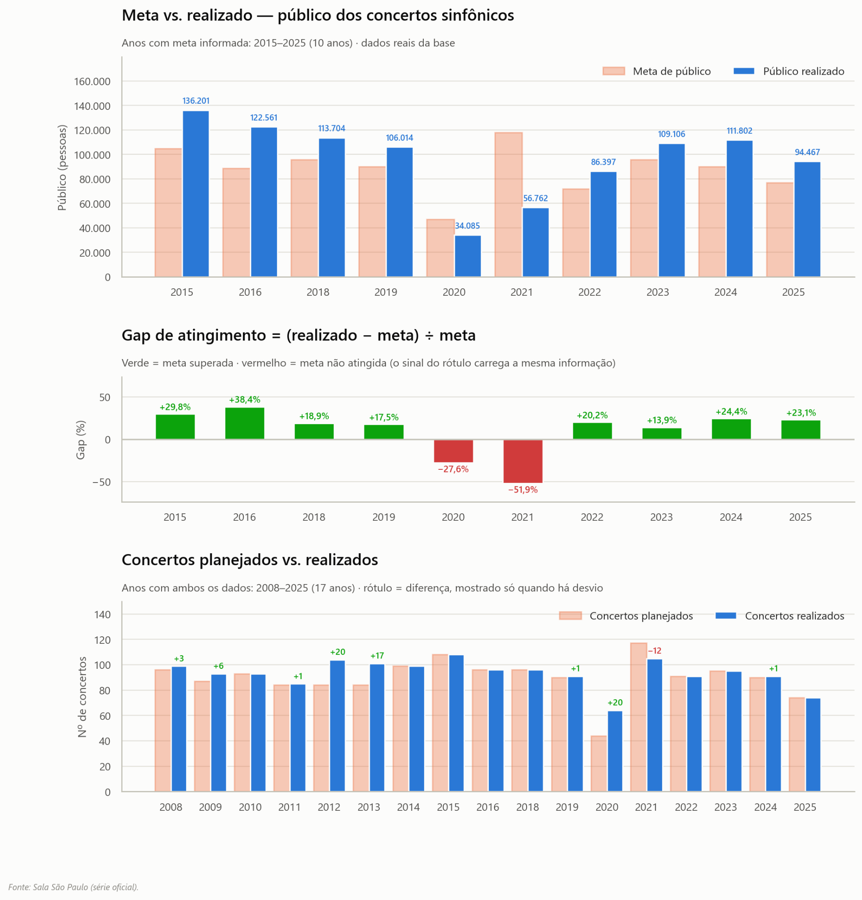
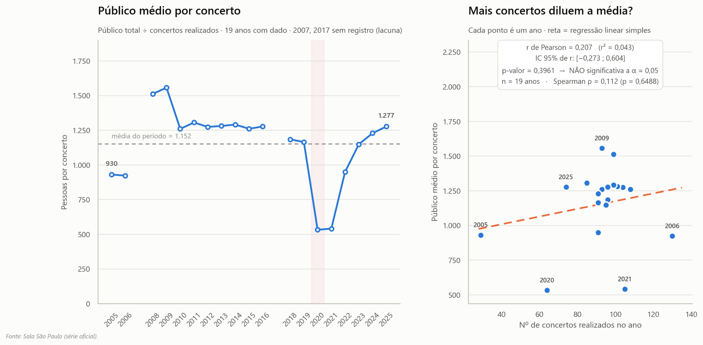
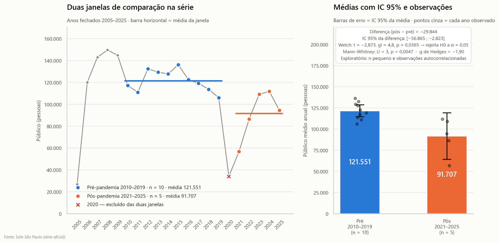
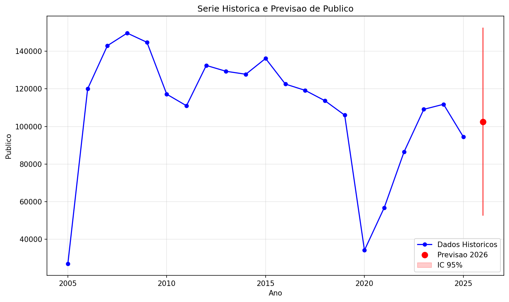

Painel executivo
Sala São Paulo — público dos concertos sinfônicos
Análise estática dos anos fechados de 2005 a 2025. O dado parcial de 2026 aparece somente como referência e não entra nas estatísticas históricas.
2005–2025 fechados
2026 parcial
Resumo da trajetória
Choque em 2020, recuperação gradual e recuo em 2025
O público dos concertos sinfônicos caiu de 106.014 pessoas em 2019 para 34.085 em 2020, redução de 67,8%. A retomada levou o total a 111.802 em 2024. Em 2025, o público fechou em 94.467, queda de 15,5% frente a 2024 e nível ainda 21,0% abaixo da média pré-pandemia de 2015–2019.
Público em 2025
94.467
−15,5% vs. 2024
Recorte único: este site usa somente concertos sinfônicos da Temporada realizados na Sala São Paulo. Não são somados Coro, recitais, ensaios abertos, atividades externas ou outras categorias.
Conceito estatístico
Estatística descritiva e dispersão: média anual de 109.172, mediana de 117.162, desvio-padrão amostral de 33.513 e coeficiente de variação de 30,7%.
Série temporal
Média móvel · tendência
Evolução do público anual
A linha azul representa o público observado. A média móvel de três anos suaviza oscilações, enquanto a tendência linear resume o movimento geral da série.

Expansão inicial
Em 2005, o público foi de 26.980 pessoas, acompanhado por apenas 29 concertos registrados. Entre 2006 e 2009, o público avançou rapidamente e atingiu o pico histórico de 149.700 em 2008.
Ruptura em 2020
A pandemia produziu a maior quebra da série: o total caiu de 106.014 em 2019 para 34.085 em 2020, redução anual de 67,8%.
Retomada incompleta
O público voltou a crescer a partir de 2021 e chegou a 111.802 em 2024, cerca de 5,5% acima de 2019. Em 2025, recuou para 94.467.
Ver a série anual completa
| Ano | Público | Ano | Público | Ano | Público |
|---|---|---|---|---|---|
| 2005 | 26.980 | 2012 | 132.487 | 2019 | 106.014 |
| 2006 | 120.000 | 2013 | 129.364 | 2020 | 34.085 |
| 2007 | 143.000 | 2014 | 127.787 | 2021 | 56.762 |
| 2008 | 149.700 | 2015 | 136.201 | 2022 | 86.397 |
| 2009 | 144.800 | 2016 | 122.561 | 2023 | 109.106 |
| 2010 | 117.162 | 2017 | 119.214 | 2024 | 111.802 |
| 2011 | 111.015 | 2018 | 113.704 | 2025 | 94.467 |
| 2026 | 22.740 (parcial) | ||||
Distribuição
Quartis · IQR · outliers
Como os valores anuais se distribuem
O histograma mostra a frequência dos intervalos de público; o boxplot resume quartis, amplitude interquartil e valores extremos.

Q1106.014
Mediana117.162
Q3129.364
IQR23.350
Leitura: a média de 109.172 fica abaixo da mediana de 117.162, indicando cauda à esquerda. Pelas cercas de Tukey, de 70.989 a 164.389, os anos de 2005, 2020 e 2021 aparecem como valores extremos inferiores.
Planejamento e entrega
Gap · taxa de atingimento
Meta de público e execução dos concertos
O bloco compara público realizado com meta, mostra o gap percentual e confronta o número de concertos planejados com o efetivamente realizado.

110,7% em média
Nos dez anos com meta informada, o público superou a meta em oito. Em 2025, foram 94.467 pessoas para uma meta de 76.768, atingimento de 123,1%.
2020 e 2021
Os gaps foram de −27,6% em 2020 e −51,9% em 2021, coincidindo com o período de maior impacto das restrições sanitárias.
103,7%
Nos anos com ambos os dados, foram realizados 1.585 concertos diante de 1.528 planejados.
Eficiência
Razões · correlação de Pearson
Público médio por concerto
A razão entre público total e concertos realizados permite comparar o desempenho médio por apresentação e testar se anos com mais concertos apresentam menor média.

Mais concertos diluem a média?
Não há evidência estatística de diluição. A correlação de Pearson é r = 0,207, com r² = 0,043 e p = 0,3961. A relação é fraca, positiva e não significativa a 5%.
Confirmação não paramétrica
A correlação de Spearman também é fraca: ρ = 0,112, com p = 0,6488. Assim, os dados não sustentam uma associação monotônica relevante.
Comparação de janelas
Teste de hipótese · IC 95%
O impacto da pandemia
A janela pré-pandemia considera 2010–2019; a janela pós considera 2021–2025. O ano de 2020 é excluído das duas médias por representar o choque direto.

Interpretação: a diferença estimada entre as médias é de −29.844 pessoas, com IC 95% de −56.865 a −2.823. O teste de Welch rejeita igualdade das médias a 5%. O resultado é exploratório porque a amostra é pequena e os anos sucessivos podem ser autocorrelacionados.
Série e previsão ARIMA

Ver a série oficial completa do Excel
| Ano | Público | Variação anual | Média móvel de 3 anos |
|---|---|---|---|
| 2005 | 26.980 | — | — |
| 2006 | 120.000 | +344,8% | — |
| 2007 | 143.000 | +19,2% | 96.660 |
| 2008 | 149.700 | +4,7% | 137.567 |
| 2009 | 144.800 | −3,3% | 145.833 |
| 2010 | 117.162 | −19,1% | 137.221 |
| 2011 | 111.015 | −5,2% | 124.326 |
| 2012 | 132.487 | +19,3% | 120.221 |
| 2013 | 129.364 | −2,4% | 124.289 |
| 2014 | 127.787 | −1,2% | 129.879 |
| 2015 | 136.201 | +6,6% | 131.117 |
| 2016 | 122.561 | −10,0% | 128.850 |
| 2017 | 119.214 | −2,7% | 125.992 |
| 2018 | 113.704 | −4,6% | 118.493 |
| 2019 | 106.014 | −6,8% | 112.977 |
| 2020 | 34.085 | −67,8% | 84.601 |
| 2021 | 56.762 | +66,5% | 65.620 |
| 2022 | 86.397 | +52,2% | 59.081 |
| 2023 | 109.106 | +26,3% | 84.088 |
| 2024 | 111.802 | +2,5% | 102.435 |
| 2025 | 94.467 | −15,5% | 105.125 |